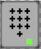
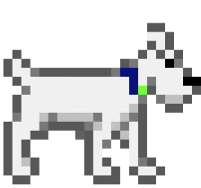

Intro
To TI-Mfinity and Beyond
Willkommen zum zweiten Teil von Die Abenteuer von Kim und Tim! Nachdem wir die Faxflut erfolgreich gestoppt haben, führt uns unser Abenteuer nun auf die Fährte des Bösewichts.
Macht euch bereit für eine spannende Reise, in der ihr mit forensischem Spürsinn den Hinweisen des letzten Angriffs folgt, um schließlich den Bösewicht zu schnappen. Viel Erfolg!
readme.md
| Dieses mal musst Du alle Türcodes, die ihr sammelt, aufschreiben. Eventuell benötigt ihr sie später noch. | ||
| Du findest unten rechts zusätzlich einen TIM-Button, der dich gern bei Aufgaben unterstützt, falls du nicht weiterkommst. | ||
| Bereiche mit der Kennzeichnung Event leiten dich zurück zum Bühnenbereich, wo auch ein Help Desk bereitsteht. | ||
|  |
Verschlossene Türen lassen sich über das Code-Eingabefeld öffnen.
Hinweis: Der Edge-Browser wird nicht unterstützt! |
|
|  | TIM begleitet dich auf deinem Abenteuer und hilft dir, spannende Entdeckungen auf den Maps zu machen. | |
| Objekte mit der Lupe sollten genauer untersucht werden. | ||

|
Bei Workadventure öffnet sich jedes Mal der Chat, wenn Ihr einen Spieler trefft? Leider können wir das nicht ändern. Solange Mikrofon und Kamera ausgeschaltet sind, startet WA automatisch den Chat. |

Dieses mal musst Du alle Türcodes, die ihr sammelt, aufschreiben. Eventuell benötigt ihr sie später noch.